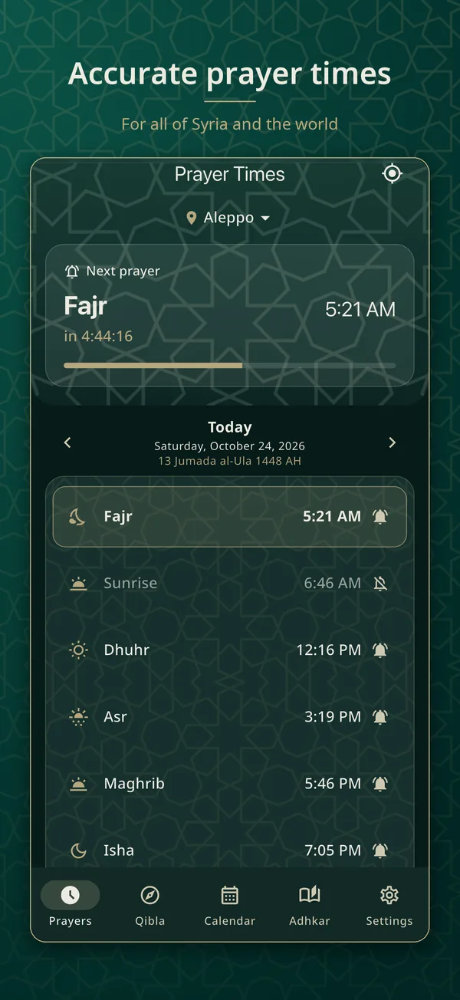
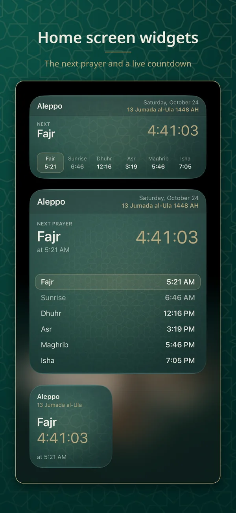
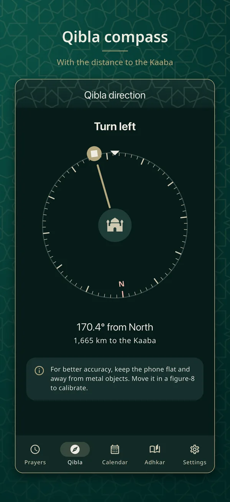
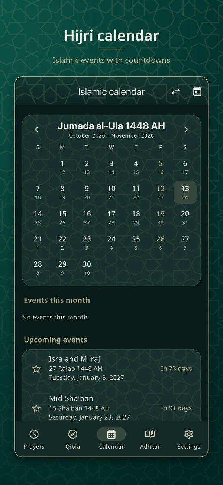
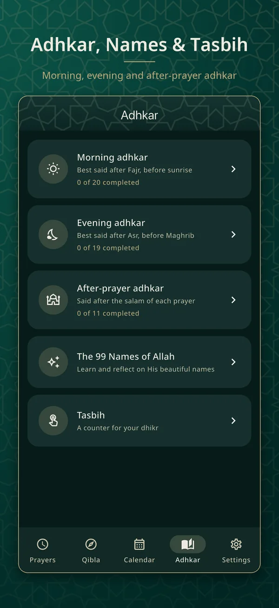
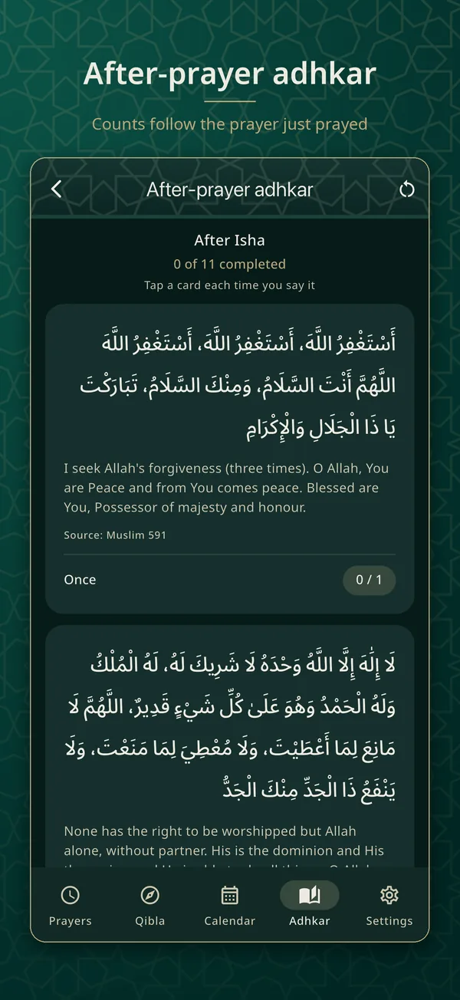
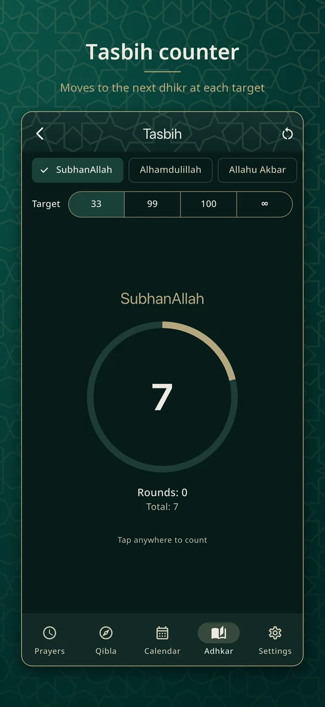
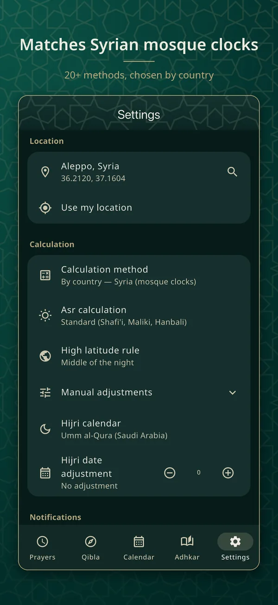

Accurate prayer times for all of Syria and the worldمواقيت صلاة دقيقة لكل سوريا والعالم
Times that match the Syrian mosque clocks to the minute, a Qibla compass, the Hijri calendar, morning and evening adhkar and a Tasbih counter. Works offline, in English and Arabic.مواقيت تطابق ساعات المساجد السورية بالدقيقة، وبوصلة للقبلة، والتقويم الهجري، وأذكار الصباح والمساء، ومسبحة. يعمل دون إنترنت، بالعربية والإنجليزية.
No ads, no trackingبلا إعلانات ولا تتبّعWorks offlineيعمل دون إنترنتEnglish & العربيةالعربية و English

Everything in one placeكل ما تحتاجه في مكان واحد
Made for daily worshipصُمّم لعبادتك اليومية
Calm, focused and private. Every calculation happens on your phone.هادئ وبسيط ويحترم خصوصيتك. كل الحسابات تجري على هاتفك.
Syrian mosque-clock timesمواقيت ساعات المساجد السورية
In Syria the default method reproduces the tables in Syrian mosque clocks, matching to the minute. Elsewhere it picks the right method for your country.في سوريا تطابق طريقة الحساب الافتراضية جداول ساعات المساجد السورية بالدقيقة، وفي باقي الدول تُختار الطريقة المناسبة لبلدك تلقائيًا.
Qibla compassبوصلة القبلة
A haptic cue when you face the Qibla, the distance to the Kaaba, and self-calibration with correction to true north.اهتزاز خفيف عند مواجهة القبلة، والمسافة إلى الكعبة، ومعايرة ذاتية مع تصحيح نحو الشمال الحقيقي.
Hijri calendarالتقويم الهجري
Hijri and Gregorian side by side, Islamic events with countdowns, a date converter and a ±2 day moon-sighting adjustment.الهجري والميلادي جنبًا إلى جنب، والمناسبات الإسلامية مع العد التنازلي، ومحوّل للتاريخ، وتعديل يومين لرؤية الهلال.
Azan & remindersالأذان والتنبيهات
A notification for each prayer with the Azan, an optional reminder before it, and alerts for sunrise and the last third of the night.تنبيه لكل صلاة مع الأذان، وتذكير اختياري قبلها، وتنبيهات للشروق والثلث الأخير من الليل.
Adhkar & 99 Namesالأذكار وأسماء الله الحسنى
Morning and evening adhkar from Hisn al-Muslim with references and tap-to-count, plus adhkar after prayer and the 99 Names.أذكار الصباح والمساء من حصن المسلم مع المصادر والعدّ باللمس، وأذكار بعد الصلاة، وأسماء الله الحسنى.
Tasbih counterالمسبحة
Targets of 33, 99, 100 or unlimited, haptics, saved progress and a lifetime total for each dhikr.أهداف ٣٣ أو ٩٩ أو ١٠٠ أو بلا حد، مع الاهتزاز وحفظ التقدم ومجموع دائم لكل ذكر.
Widgets & watchesالأدوات والساعات الذكية
Home and Lock Screen widgets on iPhone and Android, plus Apple Watch and Wear OS apps with complications.أدوات للشاشة الرئيسية وشاشة القفل على آيفون وأندرويد، وتطبيق لساعة آبل وساعات Wear OS.
70,000 cities, offline٧٠٬٠٠٠ مدينة دون إنترنت
Use GPS or search any city in Arabic or English, even by local spelling: “Halab” finds Aleppo. Each city uses its own time zone.استخدم GPS أو ابحث عن أي مدينة بالعربية أو الإنجليزية، ولكل مدينة منطقتها الزمنية الخاصة.
Take a lookألقِ نظرة
Beautiful in light and darkتصميم أنيق بالوضعين الفاتح والداكن







Try it hereجرّبه هنا
A taste of the appلمحة من التطبيق
These run entirely in your browser, just like the app runs entirely on your phone.تعمل هذه الأدوات في متصفحك بالكامل، كما يعمل التطبيق على هاتفك بالكامل.
Find the Qiblaاتجاه القبلة
Pick a city or use your location.اختر مدينة أو استخدم موقعك.
NشEقSجWغ
0°
Tasbihالمسبحة
Tap the circle. After 33 it moves on to the next dhikr.انقر على الدائرة. بعد ٣٣ ينتقل إلى الذكر التالي.
Todayاليوم
Hijri (Umm al-Qura)الهجري (أم القرى)
Questionsأسئلة شائعة
Good to knowمعلومات مفيدة
Is the app free?هل التطبيق مجاني؟
Yes. Syria Prayer is free, with no ads, no subscriptions and no in-app purchases.نعم. صلاة سوريا مجاني، بلا إعلانات ولا اشتراكات ولا مشتريات داخل التطبيق.
How accurate are the prayer times?ما مدى دقة المواقيت؟
In Syria the default method reproduces the tables used by Syrian mosque clocks, matching Aleppo times to the minute or within one minute. Outside Syria the calculation method is chosen from your country (Umm al-Qura, Egyptian, ISNA, Karachi, Diyanet and more) and you can change it, along with the Asr madhab and per-prayer adjustments. We still recommend checking with your local mosque.في سوريا تطابق الطريقة الافتراضية الجداول المعتمدة في ساعات المساجد السورية، فتتطابق مواقيت حلب بالدقيقة أو بفارق دقيقة واحدة. وخارج سوريا تُختار طريقة الحساب حسب بلدك (أم القرى، الهيئة المصرية، ISNA، كراتشي، ديانت وغيرها) ويمكنك تغييرها، وكذلك مذهب العصر وتعديل كل صلاة بالدقائق. ومع ذلك ننصح بالتأكد من مسجدك المحلي.
Does it need the internet?هل يحتاج إلى الإنترنت؟
No. Prayer times, the Qibla, the calendar and the list of about 70,000 cities all work offline.لا. المواقيت والقبلة والتقويم وقائمة نحو ٧٠ ألف مدينة كلها تعمل دون إنترنت.
What does the app do with my location?ماذا يفعل التطبيق بموقعي؟
It uses it on your phone to calculate prayer times and the Qibla, and keeps it only on your phone. We never receive it. You can also skip GPS and pick a city. See the privacy policy.يستخدمه على هاتفك لحساب المواقيت والقبلة، ويحفظه على هاتفك فقط، ولا يصل إلينا أبدًا. ويمكنك اختيار مدينة بدل استخدام GPS. راجع سياسة الخصوصية.
Why is a notification a few minutes late on Android?لماذا يتأخر التنبيه بضع دقائق على أندرويد؟
Allow exact alarms when you turn on notifications (Settings → Alarms & reminders), and exclude the app from battery optimisation on phones that restrict background apps.اسمح بالمنبهات الدقيقة عند تفعيل التنبيهات (الإعدادات ← المنبهات والتذكيرات)، واستثنِ التطبيق من تحسين البطارية في الهواتف التي تقيّد التطبيقات في الخلفية.